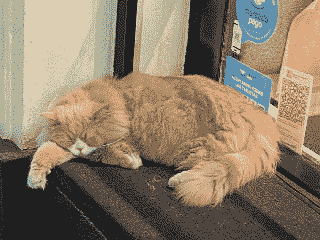

Quotes & Scraps
This is a list of quotes and scraps I've collected over the years. These are here because I like them,
not because they are necessarily true or right.
I also collect quotes from people I know personally that have said things that inspire
me, so if any of these quotes is by you and you'd like to be quoted by name, please do let me know.
If I do not name who said a particular quote, it is because I could not find the source.
Sorry! Please do let me know if you know who said it.
If you want to quote me, please check how to quote me.

Life Lessons
-
"In my walks, every man I meet is my superior in some way, and in that I learn from him."
Ralph Waldo Emerson
-
"That is the great difference between a good leader and someone who is not: don't win arguments, solve problems."
Angela Merkel
-
"You cannot heal in the environment that made you sick."
-
"A true ELI5 on how this actually affects people is 'ICNU': Interest, Challenge, Novelty, and Urgency. If something doesn't meet one of those four categories, someone with ADHD just isn't going to be able to do it."
CauliflowerBudget854, Reddit
-
"In Mexico, they have a phrase I really like: 'No importa que te digan perro, sino la perra forma en la que te la digan.'"
Marcelo E., 2022-04-01
-
"A boss I had at another company once told me something I've never forgotten, and I always see she was right: 'One thing you always have to understand is that by definition, companies are unfair and undemocratic. And if you expect anything different, that’s your problem.'"
Marcelo E.
-
"You have to know how to differentiate between what is urgent and what is important."
Nicolás Sánchez Isame, 10 Claves para Administrar tu Tiempo
-
"Sometimes a kick in the ass is a push forward."
Marcelo E.
-
"Life is what happens to us while we are busy making other plans."
John Lennon (from Marcelo E.'s WhatsApp bio)
-
"Don’t take criticism from someone you wouldn’t take advice from."
-
"El que come callado come dos veces." ("He who eats in silence eats twice.")
Fran on Sol's communion day.
-
"Use new experiences to reframe challenges, change your routine. If you shake up your routine when the curveball comes, you’ll be able to knock it out of the park."
I don't remember!"
-
"From seeing Balatro: simple is best."
Thoughts
-
"As with essentially all alcohols, the only good wine is wine you like to drink. And the only good way to drink it is the way you want to. Everything else is vanity."
YouTube Comment
-
"If you are well dressed when traveling, your chances of getting your seat upgraded go up significantly."
-
"Is it true? Is it necessary? Is it kind?"
-
"Your need for acceptance can make you invisible in this world."
Jim Carrey
-
"You can fail at what you don’t want to do, so why not give what you want to do a chance?"
Jim Carrey
-
"Let the universe know what you want."
Jim Carrey
-
"Take a chance at faith, not religion, faith, not hope, faith. Hope walks through the fire, faith leaps over it."
Jim Carrey
-
"The most satisfying jobs are mostly professions including those involving caring for, teaching and protecting others and creative pursuits."
No Stupid Questions Podcast, Episode 31: How Much Do Your Friends Affect Your Future? 2025-07-19
-
"If you want to go fast, go alone. If you want to go far, go together."
Probably an African proberv
-
"More is lost by indecision than wrong decision."
Cicero
Management
Some other management quotes are in the business section below. I should move them here.
-
"A manager who exposes you is a son of a bitch. And one you can't trust or who doesn't back you up is a bad manager."
Sebastián K., 2021-09-15
-
"Part of being a leader is letting your staff do their jobs, and doing your part to make sure they are freed up to do it. Leadership isn’t about doing, it’s about enabling and empowering a team to have a coordinated response."
No Stupid Questions podcast
-
"A computer can never be held accountable. Therefore a computer must never make a management decision."
IBM, 1979 internal training manual
Business
-
"Business applications use dates heavily."
White, Doug (12 July 1998). "Frequently Asked Questions (FAQ) About the Y2K Problem"
-
"We found that working while traveling impacted our projects in positive ways."
Devine Lu Linvega
-
"The big money isn't in creating products, it's in creating customers."
How to Make Trillions of Dollars
-
"There are two reasons somebody will buy something: (1) to solve a problem (to have a need met), or (2) to experience a lifestyle."
Josh Strife Hayes
-
"My recipe for success is always taking one part familiar, one part novel, and mixing them. So I always try to find something that fits that formula."
C.W.
-
"I like to spend as little money as possible and accumulate zero debt. That has always been my competitive advantage."
C.W.
-
"If we understand what the extremes are, the middle will take care of itself."
Dan Formosa, Objectified
-
"The measure of a leader’s caliber is their ability to remain calm before their subordinates in the face of adversity."
Diego B.
-
"Be clear on how to measure success."
Rupert Day
-
"Your vision must be exciting and there has to be a payoff in it for everybody. When you plan like that, everybody can see themselves in your vision."
(I can't find the source for this one.)
-
"Your vision must be resilient: it has to withstand cultural, political and technological change."
(I can't find the source for this one.)
-
"Your vision has to be inclusive: the very words you choose have to be an invitation to those who believe in what you believe. Nobody must end up feeling a second citizen in their own company."
(I can't find the source for this one.)
-
"Your vision has to be service oriented. In every relationship there’s a benefactor and a benefiter. Service orientation means that the primary benefit goes to those other than the contributor."
(I can't find the source for this one.)
-
"If you want to set a trend, you have to tell the customer, 'I’m going to offer you this experience, and you’re going to like it.'"
An Uber driver, Easter 2024 – (dubious, but it resonated with me for some reason)
-
"Union relations are based on cooperation between managers and workers. Collective bargaining negotiations revolve around employee security. For example, staff cuts can only occur in severe economic crises and, before resorting to layoffs, managers' salaries and hiring levels will be reduced."
-
"Managers must take into account two types of factors when organizing. First, they must define the organization’s goals, its strategic plans to pursue those goals, and the capacity of their organizations to implement those strategic plans."
-
"In the early 20th century, various authors attempted to determine the maximum number of people a manager could supervise, and many concluded that the universal maximum was six."
-
"Just as the balance sheet describes a company’s financial situation at a given moment, the income statement summarizes the company’s financial performance over an interval. Thus, the income statement says: 'This is the amount of money I earned during this period,' instead of 'This is the amount of money we are worth now.'"
-
"People tend to join teams whose members they identify with or admire. Thus, the organization might want to start by trying to attract employees who share certain key values."
-
"The most effective leaders established supportive relationships with their employees, tended to rely on group decisions instead of personal ones, and encouraged employees to set high performance goals and achieve them."
-
"Transactional leaders determine what employees must do to achieve the organization’s and their own objectives, classify those requirements, and help employees believe they can achieve their goals if they make the necessary effort. Transformational leaders, on the other hand, 'motivate us to do more than we originally expected to do,' because they enhance our appreciation of the importance and value of our tasks."
-
"To get people talking about you, you have to do something worth talking about."
Simon Bailey, Being Remarkable
-
"We purposefully invest in what our customers most value."
Simon Bailey, Being Remarkable
-
"We are easy to find and to do business with."
Simon Bailey, Being Remarkable
-
"Metro Bank knows that it is not for everyone and it is comfortable with this. It knows that delivering a remarkable customer experience requires a business to make choices."
Simon Bailey, Being Remarkable
-
"Marketing is the tax you pay for being unremarkable."
Simon Bailey, Being Remarkable
-
"That's how we did our marketing: we made it easy for them to invite their friends, their colleages, their co-workers."
C.W.
-
"We put 100% of our effort into pleasing our users. That was our only goal, every single day."
C.W.
MMORPGs & Game Development
-
"There also seems to be a difference in philosophy when it comes to player retention. When FF14 starts losing players, Yoshi-P doesn't panic and go 'We must retain what's left!' he stops and asks 'Okay, what are we doing wrong that is making them leave?' He also doesn't panic over natural churn. In fact he's said in interviews 'Go ahead, leave for a bit, play some other games, there's lots out there, we'll be waiting when you get back.' There's no pressure to log in every day or FOMO."
Interview on the development of Final Fantasy XIV: A Realm Reborn
-
"(In games), basically there are two parts: what gets me playing the game and what keeps me playing the game."
C.W.
From Daniel Lisi, World of Warcraft, Boss Fight Books:
-
"Our guild’s World of Warcraft stories contained much more meaning than the game itself. They all pertained to what we had done together: something funny someone did during a raid, embarrassing gossip overheard in chat, or momentous triumphs we had made as one cohesive unit. We regaled ourselves with tales of our illustrious careers together in Azeroth. These were stories steeped in personality and emotion, evoking deep sentiment from the group."
-
"When you are considering adding new mechanics, you can ask, “How will this mechanic improve, complicate, or otherwise impact the game’s loop?” After all, the aspect of the game that matters most is whatever the player is spending the most time doing."
-
"World of Warcraft requires a different formula: kill stuff → level up → get loot → repeat until endgame; then kill stuff → get loot → kill harder stuff → get better loot → repeat. The 'meaning of life' in World of Warcraft is to grow a powerful character, defeat the endgame content, and gear up enough to repeat the loop when new challenges arrive."
-
"I similarly remember the euphoric rush of my guild’s first boss kills: the onscreen event of a boss’s health hitting 0%, the ensuing screams over Ventrilo, the praise between guildmates, the distribution of loot. It was a party. This is what hardcore raiders returned to, over and over again—not only the experience of the kill, but the reveling in it, the praise and celebration amongst your team. What a loop."
-
"As Jonathan Blow points out, “MMOs are notorious for having relatively empty gameplay, but keeping players hooked with constant fake rewards—this creates ‘the treadmill.’ Rewards are a way of lying to the player so they feel good and continue to play the game.” He noted some extreme examples of this, such as reported incidents of Chinese and Korean MMO players dying at the computer. “As long as players are hooked, it doesn’t matter how good the core gameplay is. As long as they want to get the nicer sword, they’ll still play the game, and as long as they play it’s all the same to us as designers—I’m sure at this point, people think I’m needlessly babbling on about this point. But I want to put forth this question: Would they still play a game if it took out all the scheduled rewards?”"
Others
-
"Anything on deck is sacrificial."
Lin Pardey
-
"The other part of the idea relates to the term 'generation.' Sociologists and market researchers have established a new, primarily applicative definition, where a generation is not based on age, time, or genetic compatibility, but rather on the similarity of lived experiences; where what classifies its members is that they have or share the same experiences."
-
"When something is 'kino,' it means it has artistic merit."
Moncholo
-
"A programming language is low-level when it requires attention to the irrelevant."
Alan J. Perlis
-
"Yes, because it may very well happen that by not trying something, I'm missing out on an immense subtree of possible paths that hook me in."
GS (in reference to buying material things)
-
"By buying something that doesn’t —cannot— overdo what I wanted it to do, it reminded me how I see life and how I actually want to live it."
This $17 watch is (slowly) replacing my phone, by Good At Life, in reference to how a phone can tell the time, but you’re always fighting the temptation to start messing around with it—and even if you usually win, eventually you lose and end up scrolling through Instagram; whereas a watch can’t do anything else, and therefore doesn’t work against you by trying to tempt you.
-
"I love downloading any new app that gets released, especially early builds folks share on TestFlight. I usually end up with a bunch of screenshots and screen recordings that I revisit to spark new ideas."
Jon Rundle
-
"The secret to my cooking is that I'm not afraid of fat."
Wendy H., great cook, 2025-11-28